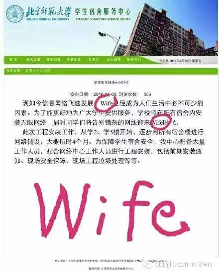
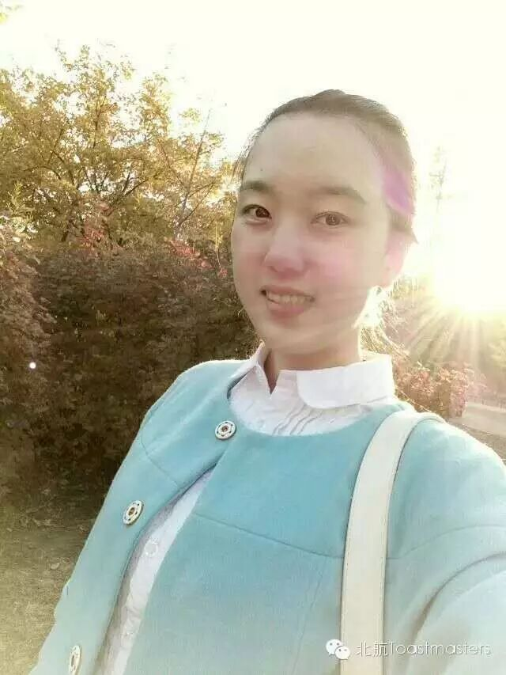
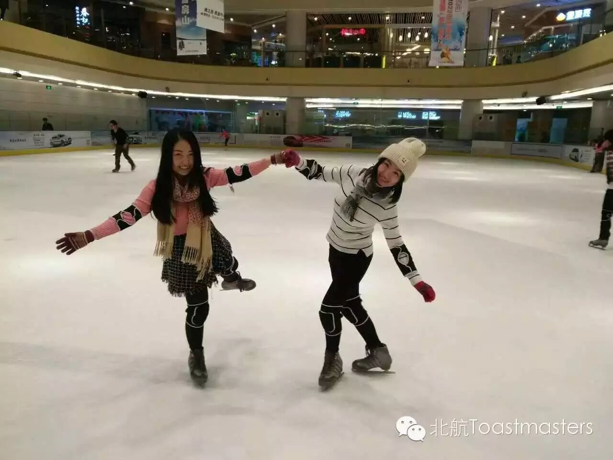

Time: 19:30-21:30,Friday,March,18
Venue:Room G849,New Main Building,Beihang University
Real-time
TM: Vance
TTM: Sarah

Recently, there were some events around theworld, like Stephen Chow got a high box office, Mr. Zuckerberg received athreat letter from ISIS, or some other events. These events are calledreal-time news. Some news is interesting, like Wife era is coming in BeijingNormal University, but some is serious. This Friday, let’s share our opinionstoward these events.
Amy
Here is Amy, that’s me!
CC1

Last week, a new member joined us. Her nameis Amy who is very beautiful. She has introduced herself but I still want toknow more about her. This Friday, Amy will give her ice break speech, CC1. Shewill tell us more information about herself. If you want to make friends withher, come to our meeting. There is a good chance.
Elena
May you be undefinable
CC2

Do you know yourself deeply? We are workingso hard that we almost forget who we are. Today Elena will share her experienceduring the process of knowing herself. She will ask us a question—May you beundefinable. Let’s see what she will talk.
Han
What sports have taught me
CC4
In modern society, we become busier andbusier. Even we don’t have time to play sports. But sports make life healthy.So playing sports every day is necessary. In this meeting, Han will talk aboutsports and tells us what sports have taught him. Come to our meeting and learnsomething from Han’s sports.
What are Toastmasters?
Toastmasters International (TI)is a nonprofit educational organization that operates clubs worldwide for thepurpose of helping members improve their communication, public speaking, andleadership skills.

https://mp.weixin.qq.com/s/Et_-VRHmtzYWZ24QMhJy6Q
本页为抢救式本地归档，图文已永久保存。